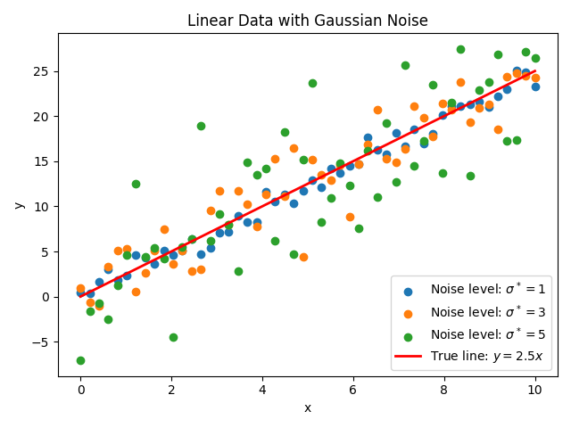

例: 線形回帰とノイズ推定¶
はじめに¶
このチュートリアルでは、ODAT-SEフレームワークを使用して線形回帰解析を実行し、ベイズ推論と分配関数法を通じて実験データのノイズレベルを推定する方法を示します。このチュートリアルの目標は、モデルエビデンスを最大化することにより、実験データの最適なノイズレベルを自動的に決定する方法を実際に試してみることです。
理論的基礎¶
パラメータ推定のためのベイズフレームワーク¶
実験測定データ \(D \equiv \{(x_{\mu,i},y_{\mu,i})\}_{\mu,i}\) を考えます。ここで:
\(i\) は各データセットの \(n\) 個のデータポイントの各々のインデックスです (\(i\) は1から \(n\))。
\(\mu\) は \(N\) 個のデータセットの各々のインデックスです (\(\mu\) は1から \(N\))。データセットは同じモデルに従うとします。(例: 異なる試行からのデータ、異なるXRDスポットからのデータなど)
\((x_{\mu,i},y_{\mu,i})\) は \(\mu\) 番目のデータセットの \(i\) 番目の測定値を表します。
我々の目標は以下を推定することです:
状態量 \(x\) を観測値 \(y\) にマッピングするモデルのパラメータ \(\theta\)、および
実験データのノイズレベル \(\sigma\)。
このチュートリアルでは、観測データに対して線形回帰を実行して前者の線形モデルを取得し、モデルエビデンスに対する最尤推定を使用して後者を決定します。
尤度関数の定義¶
計算値と観測値の間の"距離"の評価には残差平方和を用います:
標準偏差 \(\sigma\) のガウスノイズを仮定すると、単一データポイントの尤度関数(与えられたモデルの下での観測値 \(y_{\mu,i}\) の尤度)は:
ここで、\(\beta = (2\sigma^2)^{-1}\) は逆温度パラメータであり、予測された状態量 \(x\) とともにモデルをパラメータ化します。
すべての測定値の総尤度は、与えられたモデルの下での個々の点の尤度の積となります:
モデルエビデンスの定義¶
パラメータ空間 \(\Omega\) 上で一様な事前分布を仮定します:
ここで、\(V_\Omega = \int_\Omega dx\) は規格化因子です。モデルエビデンス(周辺尤度に対応)は、すべての可能なパラメータ値について周辺化することによって得られます:
分配関数を次のように定義できます:
従って、モデルエビデンスは次のように書けます:
線形回帰の解析解¶
単一のデータセットがあると仮定します。単純な線形モデル \(y = ax\) について、目的関数(残差平方和)は:
目的関数を展開すると、次が得られます:
次のように A, B, C を導入すると:
平方完成により、目的関数を次のように書き直すことができます:
以上から次のことが分かります:
\(a^* = \frac{B}{A}\) は最適フィッティングパラメータ、および
\(f^* = C - \frac{B^2}{A}\) は \(f(a^*; D)\) におけるコスト関数 \(f\) の最小値です。
モデルエビデンスの計算¶
モデルエビデンスを評価するには、まず分配関数 \(Z(D|\beta)\) を計算する必要があります。目的関数 \(f(a; D)\) を使用した分配関数を考えます。ここで、モデルパラメータ \(a\) の定義域は \([-L/2, L/2]\) です。
変数変換 \(t = a - a^*\) を実行し、評価前に定数因子を積分の外に移動します:
上記では、誤差関数の積分としての定義を使用しました:
したがって、モデルエビデンスは次のように書き出すことができます:
誤差関数は、その引数が \(\infty\) と \(-\infty\) に近づくにつれて、それぞれ1と-1に近づきます。\(L\) を十分に大きく取ると、モデルエビデンスについて次の結果が得られます:
ノイズレベルの推定¶
最尤原理はノイズレベルを推定する指針となります。モデルエビデンスの対数を \(\beta\) について最大化すると(大きな \(L\) の極限で)、次が得られます:
最適な逆温度と関連するノイズレベルは、次のように決定できます:
これにより、最尤原理に基づくデータ駆動によるノイズレベル推定が可能になります。
ODAT-SE実装¶
コード実装¶
このチュートリアルで用いるファイルは、ソースファイル中の sample/linreg_with_noise に配置されています。メインスクリプトは linreg_with_noise.py です。
ユーザー定義ターゲット関数¶
ODAT-SEフレームワークでは、ユーザーが SolverBase クラスを継承してカスタムソルバーを定義できます。
#!/usr/bin/env python
"""
Integrated linear regression and model evidence analysis
Combines a custom ODAT-SE solver implementing linear regression with model evidence calculation
"""
import odatse
import sys, os, argparse
import contextlib
import numpy as np
from matplotlib import pyplot as plt
from odatse.algorithm import choose_algorithm
sys.path.append("../../script")
from plt_model_evidence import load_data, calc_log_pdb, print_log_pdb, plot_log_pdb
class LinearRegression(odatse.solver.SolverBase):
"""Linear regression solver class"""
def __init__(self, info):
super().__init__(info)
data_file = info.solver["reference"]["path"]
self.has_intercept = info.solver.get("has_intercept", False)
data = np.loadtxt(data_file, unpack=True)
self.xdata = data[0]
self.ydata = data[1]
dimension = self.dimension
self.n = len(self.xdata)
self.X = np.zeros((self.n, dimension))
if self.has_intercept:
self.X[:, 0] = 1.0
else:
self.X[:, 0] = self.xdata.copy()
for i in range(1, dimension):
self.X[:, i] = self.X[:, i - 1] * self.xdata
def evaluate(self, xs, args, nprocs=1, nthreads=1):
loss = np.sum((self.X @ xs - self.ydata) ** 2)
return loss
ターゲット関数は evaluate で定義されます。ここでは設計行列 \(X\) を用いた残差平方和(2次損失)を使っており、\(y = a x\) (dimension = 1、切片なし)や \(y = a_0 + a_1 x\) (dimension = 2 かつ has_intercept = true) のような多項式フィットを扱えます。
モデルエビデンスの計算¶
モデルエビデンスの計算については、後処理ツール plt_model_evidence.py から関数をインポートします(詳細は ポスト処理ツール を参照)。線形フィットとノイズバンドをプロットするには、以下の関数を使用します(単一係数・複数係数、切片あり・なしの両方に対応しています)。
def plot_linear_fit_with_noise(xdata, ydata, a, noise_level, beta_opt, output_file, intercept=False):
fig, ax = plt.subplots(figsize=(10, 6))
# Plot original data points and fitted line
ax.scatter(xdata, ydata, s=50, alpha=0.7, label='Data', color='blue')
x_fit = np.linspace(xdata.min(), xdata.max(), 100)
y_fit = np.zeros(len(x_fit))
if intercept:
x = np.ones(len(x_fit))
else:
x = x_fit.copy()
if not isinstance(a, np.ndarray):
a = np.array([a])
for i in range(len(a)):
y_fit += a[i] * x
x *= x_fit
ax.plot(x_fit, y_fit, 'r-', linewidth=2, label=f'Coefficients: {a}')
# Add noise bands (\pm1\sigma, \pm2\sigma)
ax.fill_between(x_fit, y_fit - noise_level, y_fit + noise_level,
alpha=0.3, color='red', label=f'$\\pm1\\sigma$ noise')
ax.fill_between(x_fit, y_fit - 2*noise_level, y_fit + 2*noise_level,
alpha=0.15, color='red', label=f'$\\pm2\\sigma$ noise')
ax.set_xlabel('x', fontsize=12)
ax.set_ylabel('y', fontsize=12)
ax.set_title(f'Linear Regression with Optimal Noise Level\n' +
f'$a$ = {a}, $\\beta_{{opt}}$ = {beta_opt:.2e}, $\\sigma$ = {noise_level:.4f}', fontsize=14)
ax.legend(loc='best')
ax.grid(True, alpha=0.3)
fig.savefig(output_file, dpi=150, bbox_inches='tight')
plt.close()
print(f"Linear fit plot saved to: {output_file}")
メイン関数は、TOMLファイルを入力として受け取り、オプションでログファイルを指定します。その他の引数には、事前分布の正規化係数と、モデルエビデンスプロットを可視化する際のプロットウィンドウ選択に関する引数が含まれます。
if __name__ == "__main__":
parser = argparse.ArgumentParser(description='Integrated linear regression and model evidence analysis')
# Basic parameters
parser.add_argument('--input', type=str, default='input.toml',
help='ODAT-SE input configuration file path')
parser.add_argument('--logfile', type=str, default=None,
help='ODAT-SE run log file (default: output_dir/odatse_run.log)')
# Model evidence calculation parameters
parser.add_argument('-V', '--volume', type=float, default=1.0,
help='Normalization factor of prior probability distribution (default is 1.0)')
# Auto-focus parameters
parser.add_argument('--auto-focus', action='store_true',
help='Auto-focus on maximum model evidence region')
parser.add_argument('--focus-factor', type=float, default=0.5,
help='Auto-focus tightness (0-1, smaller is tighter, default: 0.5)')
args = parser.parse_args()
# Run main program
print("="*60)
print("Starting Linear Regression and Model Evidence Analysis")
print("="*60)
# Step 1: Run ODAT-SE
print("\nStep 1: Running ODAT-SE linear regression...")
sys.argv = ["script.py", args.input, "--init"]
# Initialize ODAT-SE to get output directory
info, run_mode = odatse.initialize()
output_dir = info.base.get("output_dir", "./output")
# Create output directory if it doesn't exist
os.makedirs(output_dir, exist_ok=True)
# Set log file path
if args.logfile is None:
args.logfile = os.path.join(output_dir, "odatse_run.log")
# Run ODAT-SE with redirected output
with open(args.logfile, "w") as f:
with contextlib.redirect_stdout(f), contextlib.redirect_stderr(f):
solver = LinearRegression(info)
runner = odatse.Runner(solver, info)
alg_module = choose_algorithm(info.algorithm["name"])
alg = alg_module.Algorithm(info, runner, run_mode=run_mode)
result = alg.main()
print("ODAT-SE run completed")
print(f"Output directory: {output_dir}")
# Get fitting parameters
a = result['x']
xdata = solver.xdata
X = solver.X
ydata = solver.ydata
n_data = solver.n
print(f"\nFitting results:")
print(f" Coefficients a = {a}")
print(f" Number of data points n = {n_data}")
# Step 2: Load fx.txt data and calculate model evidence
print("\nStep 2: Calculating model evidence...")
fx_file = os.path.join(output_dir, "fx.txt")
if not os.path.exists(fx_file):
raise FileNotFoundError(f"Error: Cannot find file {fx_file}")
beta, logz = load_data(fx_file)
log_pdb = calc_log_pdb(beta, logz, np.asarray([n_data], dtype=np.int64), np.asarray([1], dtype=np.float64), args.volume)
# Save model evidence data
evidence_file = os.path.join(output_dir, "model_evidence.txt")
print_log_pdb(evidence_file, beta, log_pdb)
# Step 3: Find optimal beta value
print("\nStep 3: Finding optimal beta value...")
valid_mask = np.isfinite(log_pdb) & np.isfinite(beta)
if not np.any(valid_mask):
raise ValueError("No valid data points")
max_idx = np.argmax(log_pdb[valid_mask])
beta_opt = beta[valid_mask][max_idx]
log_pdb_max = log_pdb[valid_mask][max_idx]
print(f"\nOptimal parameters:")
print(f" beta_opt = {beta_opt:.6e}")
print(f" log P(D;beta_opt) = {log_pdb_max:.6f}")
# Step 4: Calculate noise level
noise_level = 1.0 / np.sqrt(2.0 * beta_opt)
print(f"\nNoise level:")
print(f" std = 1/sqrt(2*beta_opt) = {noise_level:.6f}")
# Calculate R^2 value
y_pred = X @ np.asarray(a)
ss_res = np.sum((ydata - y_pred)**2)
ss_tot = np.sum((ydata - np.mean(ydata))**2)
r_squared = 1 - (ss_res / ss_tot) if ss_tot != 0 else 0
print(f"\nFitting quality:")
print(f" R^2 = {r_squared:.6f}")
print(f" Residual sum of squares = {ss_res:.6f}")
# Step 5: Generate plots
print("\nStep 5: Generating plots...")
# Plot model evidence and linear fit with noise bands
evidence_plot = os.path.join(output_dir, "model_evidence.png")
plot_log_pdb(evidence_plot, beta, log_pdb, None, args.auto_focus, args.focus_factor)
fit_plot = os.path.join(output_dir, "linear_fit_with_noise.png")
plot_linear_fit_with_noise(xdata, ydata, a, noise_level, beta_opt, output_file=fit_plot,
intercept=solver.has_intercept)
# Save results to file
print("\nStep 6: Saving results...")
results_file = os.path.join(output_dir, "analysis_results.txt")
with open(results_file, "w") as f:
f.write("Linear regression and model evidence analysis results\n")
f.write("="*50 + "\n\n")
f.write(f"Fitting parameters:\n")
f.write(f" Coefficients a = {a}\n")
f.write(f" Number of data points n = {n_data}\n\n")
f.write(f"Optimal parameters:\n")
f.write(f" beta_opt = {beta_opt:.6e}\n")
f.write(f" log P(D;beta_opt) = {log_pdb_max:.6f}\n\n")
f.write(f"Noise level:\n")
f.write(f" std = {noise_level:.6f}\n\n")
f.write(f"Fitting quality:\n")
f.write(f" R^2 = {r_squared:.6f}\n")
f.write(f" Residual sum of squares = {ss_res:.6f}\n")
print(f"Results saved to: {results_file}")
print("\n" + "="*60)
print("Analysis completed!")
print(f"All output files are saved in: {output_dir}")
print("="*60)
実行例¶
例1: 6点線形回帰¶
ステップ1: 入力データの準備¶
2列(x値とy値)のデータファイル data.txt を作成します:
1.0 1.1
2.0 1.9
3.0 3.1
4.0 4.2
5.0 4.8
6.0 6.1
ステップ2: ODAT-SE入力ファイルの作成¶
ODATSEの仕様に従って input.toml を作成します (モデルエビデンスはレプリカ交換モンテカルロおよびポピュレーションアニーリング・モンテカルロ(PAMC)アルゴリズムで利用可能):
[base]
dimension = 1
output_dir = "./output_data"
[solver]
name = "user"
[solver.reference]
path = "./data.txt"
[algorithm]
name = "pamc"
seed = 12345
[algorithm.param]
min_list = [-20.0]
max_list = [20.0]
step_list = [0.05]
[algorithm.pamc]
Tnum = 100
bmin = 1e-5
bmax = 1e2
Tlogspace = true
numsteps_annealing = 100
nreplica_per_proc = 10
ステップ3: 解析の実行¶
スクリプトを実行し、input.toml を入力引数として渡します:
python linreg_with_noise.py --input input.toml
自動フォーカス機能を使用して、モデルエビデンスプロットの最大値を含む適切なプロットウィンドウを決定するには、オプションの --auto-focus をセットし、0から1のフォーカス係数 --focus-factor (デフォルト: 0.5)パラメータを指定します。
python linreg_with_noise.py --input input.toml --auto-focus --focus-factor 0.3
理論計算¶
上記で用いたデータは次の6点からなります:
前に提示した式を適用すると、\(a^*\)、\(f^*\)、および \(\beta_{\text{opt}}\) と \(\sigma_{\text{opt}}\) の理論値は次のように計算できます:
数値結果¶
PAMCアルゴリズムを用いた計算から以下の値が得られます:
\(a^* = 1.0066\) (数値。dimension = 1 の単一係数)
\(\beta_{\text{opt}} = 23.101\) (数値)
\(\sigma_{\text{opt}} = 0.14712\) (\(\beta_{\text{opt}}\) から)
\(\beta\) 値のわずかな違いを引き起こす要因には、アニーリングスケジュールにおいて温度刻みが離散的であること、およびモンテカルロ法での有限サンプリングによる分配関数推定の統計的変動があります。

図1: この例で使用したデータセットの線形回帰プロット(出力: linear_fit_with_noise.png)。¶
推定されたノイズレベル \(\sigma \approx 0.1\) は、フィッティングされた直線からの \(y_i\) の偏差を考えると妥当です。
例2: 異なるノイズレベルでの人工データ¶
この例では、3つの異なるノイズレベルでのデータに対してモデルエビデンスを最大化し、ノイズ推定のロバスト性を示します。
ステップ1: 入力データの準備¶
サンプルには、ノイズレベルを指定してガウスノイズ付きの線形データを生成するスクリプト data_gen.py が含まれています。パラメータはファイル(例: parameters.txt)で指定します。パラメータファイルの例:
a = 2.5
n = 50
x_min = 0.0
x_max = 10.0
noise_levels = 1.0, 3.0, 5.0
seed = 42
データ生成スクリプトを実行します(パラメータファイルを引数に渡す。省略時は parameters.txt):
python data_gen.py parameters.txt
これにより、デフォルトの datafile_prefix を使う場合、data_noise1.0.txt、data_noise3.0.txt、data_noise5.0.txt およびサマリ図 data.png が出力されます。スクリプトはベクトル係数 a (例: 多項式用に a = 2.5, 0.1) や datafile_prefix の指定にも対応しています。
{kind=link}

図2: 関数 \(y=2.5x\) から生成し、レベル \(\sigma^*=1,3,5\) のガウスノイズを付加した人工データ(data_gen.py で生成。デフォルト出力は data.png)。¶
ステップ2: ODAT-SE入力ファイルの作成¶
例1と同じ構成の入力ファイルを使います。[base].output_dir と [solver.reference].path を、出力ディレクトリおよび生成したデータファイルのいずれか(例: ./data_noise1.0.txt)に合わせて設定してください。複数回実行する場合は、path を data_noise3.0.txt や data_noise5.0.txt に変更します。
ステップ3: 解析の実行¶
3つのデータセットそれぞれについて、input.toml の path (および必要に応じて output_dir) を該当するデータファイルに合わせて変更したうえで、次を実行します:
python linreg_with_noise.py --input input.toml
自動フォーカス機能を使用すると、呼び出しは次のようになります:
python linreg_with_noise.py --input input.toml --auto-focus --focus-factor 0.3
数値結果¶
3つのデータセットのそれぞれに対して線形回帰とノイズ推定を実行すると、次の結果が得られます:
| 傾き | ノイズレベル | フィッティングされた傾き | 推定されたノイズレベル |
| $$a^*=2.5$$ | $$\sigma^*=1$$ | $$a=2.4516$$ | $$\sigma=0.8820$$ |
| $$a^*=2.5$$ | $$\sigma^*=3$$ | $$a=2.4844$$ | $$\sigma=2.5412$$ |
| $$a^*=2.5$$ | $$\sigma^*=5$$ | $$a=2.4552$$ | $$\sigma=4.8738$$ |
モデルがノイズレベル \(\sigma=5\) の場合の回帰プロットとモデルエビデンスプロットを以下に示します。フィット図は実行時の出力ディレクトリに linear_fit_with_noise.png として保存されます。

図3: ノイズレベル \(\sigma^*=5\) のデータセットに対する線形回帰プロットとモデルエビデンスプロット。¶